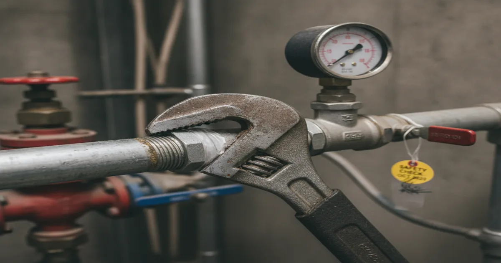
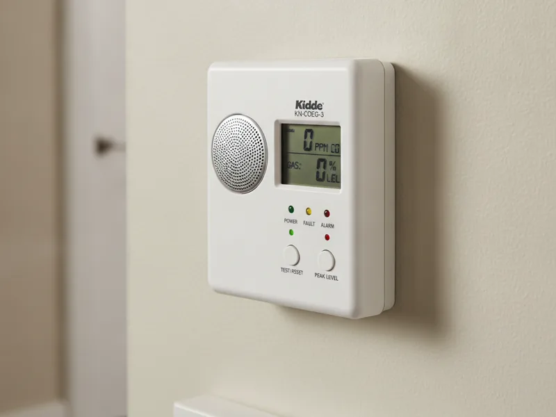
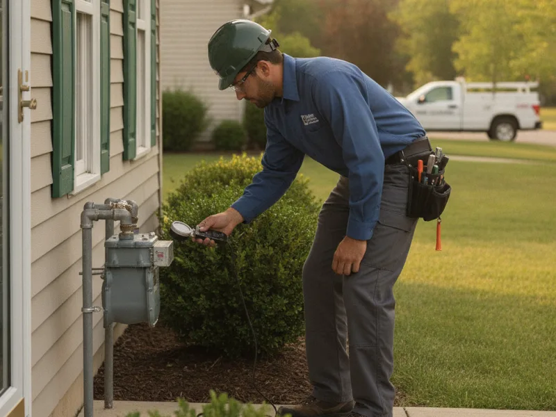

Gas Line Repair in Armonk, NY
A gas smell or a sudden drop in pressure isn't something to wait on. Our licensed technicians diagnose and repair gas line issues safely for Armonk-area homes, with upfront pricing and no guesswork.
- Licensed & Insured
- Emergency Plumbing Available
- Upfront Pricing
- Same-Day Service Available

Signs you need gas line repair
A gas leak doesn't always announce itself with an obvious smell. Here's what homeowners typically notice:
- A distinct "rotten egg" odor near the meter, appliances, or where a gas line runs
- A hissing sound near a pipe, fitting, or the meter itself
- A pilot light that won't stay lit, or a flame that burns yellow instead of blue
- A noticeable drop in gas pressure — an appliance heating slower or weaker than usual
- Dead or discolored vegetation in a patch of yard near a buried gas line
- A higher-than-normal gas bill with no change in how you're using appliances
Any one of these is worth a call. You don't need to be sure it's a gas leak — that's our job to confirm.

What causes gas line problems
Most gas line issues we find in older Armonk-area homes come down to a handful of causes: corroded or aging pipe fittings, a connection that was never sealed properly, ground shifting that stresses a buried line, or an appliance connector that's worn out and needs replacing.
Newer homes aren't immune either — a fitting installed slightly wrong during construction or a remodel can leak slowly for a long time before anyone notices.
We don't guess at the cause. We test the line, isolate where the pressure is dropping, and confirm exactly what's wrong before recommending a fix.
What to do before you call
If you smell gas strongly or hear hissing near a line, safety comes first, before any repair conversation:
- Get everyone out of the house immediately. Don't stop to gather belongings.
- Don't flip light switches, use your phone indoors, light a match, or start your car in an attached garage. Any spark is a risk.
- Don't try to locate or fix the leak yourself. Leave the area.
- Once you're safely outside and away from the house, call your gas utility's emergency line or 911.
- Only after the situation is confirmed safe, call us to diagnose and repair the line so gas service can be safely restored.
The National Fire Protection Association publishes national fuel gas safety standards that guide exactly this kind of response — we follow the same principles on every call.
If what you're noticing is milder — a faint smell you're not certain about, or a pilot light issue with no odor at all — it's still worth calling us directly rather than waiting to see if it gets worse.
Our repair process
Once it's safe to proceed, we inspect the line and connections, pressure-test to confirm the exact location of the problem, and explain what we found in plain terms — no jargon, no pressure.
You'll get upfront pricing before we touch anything. Depending on what we find, the fix might be a fitting repair, a section of line replacement, or in some cases, swapping in a new gas water heater if the appliance connection itself is the source of the problem.
After the repair, we test the line again to confirm there's no remaining leak before we consider the job done.

When to call a pro
Call us for any suspected gas smell, hissing near a line or meter, pilot light or flame color issues, or a sudden pressure drop across your gas appliances. These aren't do-it-yourself repairs — gas line work in New York requires a licensed plumber, and for good reason.
Gas line repair is just one part of what we do. Take a look at our full gasfitting services for gas water heater installation, or the rest of what we handle in Armonk for everything outside of gas work.
Frequently asked questions
What should I do first if I smell gas in my house?
Leave the house immediately without flipping switches or using your phone indoors. Once you're safely outside, call your gas utility's emergency line or 911, then call us once the situation is confirmed safe.
Is a faint gas smell still worth calling about?
Yes. A faint or intermittent smell can still mean a small leak. It's worth a call even if you're not certain what you're noticing.
How do you find where a gas line is leaking?
We pressure-test the line and inspect fittings and connections to isolate exactly where pressure is dropping, rather than guessing or replacing more than necessary.
Can a gas leak happen underground, away from the house?
Yes. Buried gas lines can develop leaks from ground shifting or corrosion. Dead grass or unusual odor in a specific patch of yard can be a sign.
Do you offer emergency gas line repair?
We treat any suspected active leak as urgent and prioritize it. Call us right away and we'll get to you as quickly as we safely can.
Will you give me a price before starting the repair?
Always. Once we've diagnosed the issue, we explain what's wrong and give you a clear price before any repair work begins.